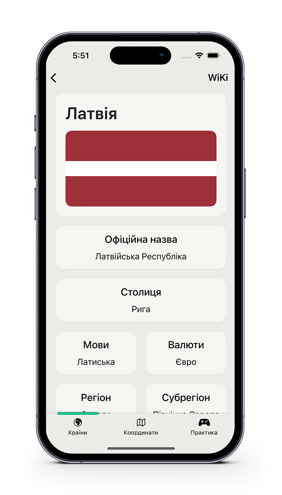

Allows user to browse countries and other territories of the world, see basic data about them, view their location on the world map, open Wiki-page in corresponding to interface language, play a mini-game to memorize flags and navigate world map to create custom points.
Programmatic UI without the use of Storyboards.
Animated expandable address view to show full or abreviated adress of selected point, supports hold to copy.
Animated Tab-Selection slider.
Implemented custom annotation callout view with the use of UIBezierPath that allows full customization of callout's design and layout over the native implementation.
Supports Dark Mode.
Neumorphic buttons.
Interface and country data localized to Ukrainian with the use of String Catalogues.
Frameworks used
Swift
UIKit
WebKit
MapKit
CoreLocation
CoreData
Key Features
Expandable adress view
The view is shown when you select a pin on the map. It initially shows the abbreviated address of the pin's location, but you can expand it by tapping or dragging. If you wish to copy the address, you can do so by long-pressing it.
Neumorphic Buttons
The Practice tab greets the user with beautiful neumorphic buttons, creating the illusion of a 3D object through the clever use of shadows. To further enhance the perception of these buttons, haptic feedback is provided upon both touch and release.
Custom Callout
In order to implement a custom design and layout for the annotation's callout view, a custom one had to be created, and it is done by using UIBezierPath to draw the callout shape.
Tab Selection Slider
To display the currently selected tab, a smooth slider has been implemented. It smoothly transforms into a search button when the 'Coordinates' tab is selected. The button incorporates haptic feedback to replicate the sensation of pressing a real button.
Dark Mode Support
To support dark mode, I've designed a color scheme with complementary colors for both light and dark modes. To implement it, I've created two variants of used assets and dynamic UIColor pairs for elements and shadows. Every color will choose its appropriate value automatically whenever the system appearance changes.
Ukrainian Localization

The app and country data are fully localized to the Ukrainian language with the help of String Catalogs. The language is set automatically depending on the system's language. Additionally, when opening a Wikipedia page for a selected country, the app will generate a link accordingly, ensuring that the opened Wikipedia article is in the corresponding language.
Other Cool Stuff
When user stops scrolling through country details and the UIMapView is fully visible, it will show the country's location on the world map with a nice animation.
Using this sheet, you can enter your coordinates and navigate to that point or focus on an already saved one by selecting it in the 'Saved locations' tableView.